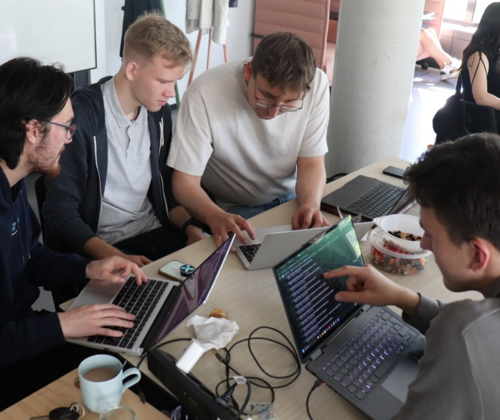
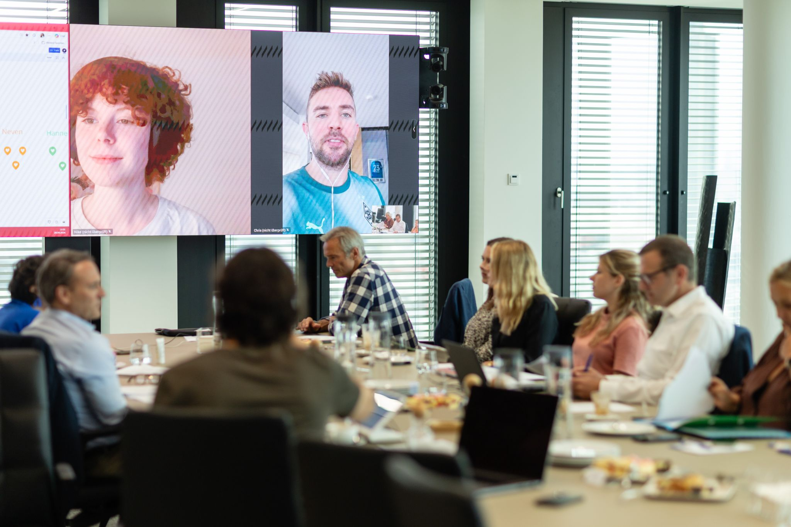
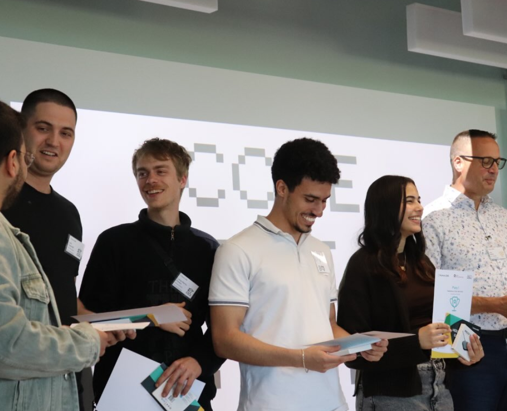

PM x TUM.ai Hackathon
In mid-June, an unusual but powerful combination took center stage: diplomacy and code. At the Public Makers x TUM.ai Makethon, 40 highly motivated students from technology, policy, business, and design spent a weekend reimagining how diplomacy could look in times of crisis.
Over the course of 48 hours, eight interdisciplinary teams developed bold prototypes addressing challenges at the intersection of international relations and digital innovation. The ideas were as diverse as they were visionary: crisis companions built with AI, optimized visa processes, and even attempts to create a shared diplomatic language through large language models.
The Challenge
The central question guiding the Makethon was: What if the next German embassy isn’t built with bricks, but with code?
From digital consular services to real-time crisis communication, the participants explored what diplomacy might look like if reimagined for the digital age. The energy in the room was electric — driven by curiosity, purpose, and the shared ambition to build something meaningful.

Deep Conversations, Real-World Impact
The event went far beyond code architecture. Teams engaged in thoughtful discussions about data availability during crises, the complexities of data protection, and the intricacies of visa application processes. These debates highlighted the practical challenges of modern diplomacy and how digital tools could help address them.

A Jury with Expertise
The jury had the difficult task of selecting a winner from an impressive set of solutions. We thank our jury members for their expertise and commitment:
Vanessa Theel, SUMM AI
Dr. Afsaneh Asaei, UnternehmerTUM
Thomas Lange, Achleitner Ventures
Hans-Christian Mangelsdorf (Head of Jury), Data Innovation Lab / German Federal Foreign Office
Congratulations go to Team VisaLegatio, who took first place with their innovative solution for improving visa processes.

Looking Ahead
The Makethon showed how powerful it can be when young people from different disciplines come together to rethink diplomacy through the lens of technology. It was a weekend that proved diplomacy is not only written in treaties and negotiations — it can also be prototyped, tested, and reimagined with code.
We thank all participants for their creativity, commitment, and the unique spirit they brought to this event.